Identita domu
Dům mezi 653 a 666 (skica KSPPOP 653 | 659 | 666, GIS budova 1124 s popiskem 659). Fotografie odpovídá pohledu z plánu 1882: v přízemí pár oken, dveře se dvěma schody a pár zazděných oken, v patře pár, jedno okno a pár.
Použité prameny: fotografie cp_659_001 a cp_659,653_001 (rektifikace 10,62 × 8,55 m), plán 1882 (cp_659_001__2: 8,55 m k hlavní římse, podlaží 3,45 m), skica KSPPOP cp_659_001, GIS půdorys 1124.
Kde je dům na fotografiích
Dům je na snímku v červeném rámečku, sousední domy jsou popsány čísly a každý otvor má ID, podle kterého se počty otvorů kontrolují proti modelu. Kliknutím otevřete větší obrázek.

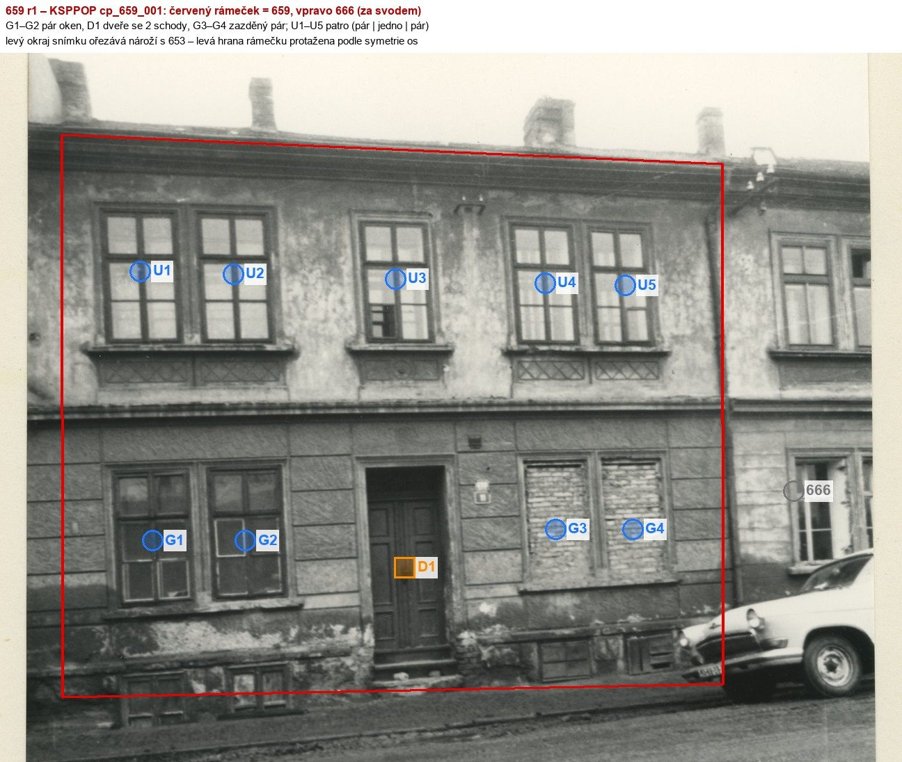
= Ansicht 1882
Přílohy v databázi (9)
Všechny přílohy struktury 659 v databázi Libuše, načtené živě 25. 10. 2026 (jen pro čtení) a otevřené. Kliknutím otevřete větší náhled.

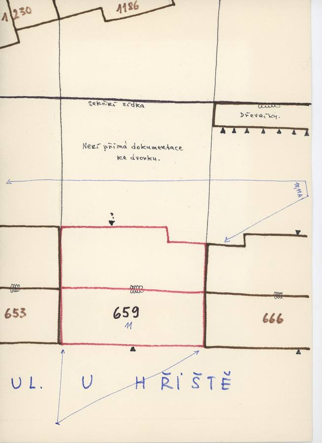
plán / výkres
SHA-256 9516c0d52a87…

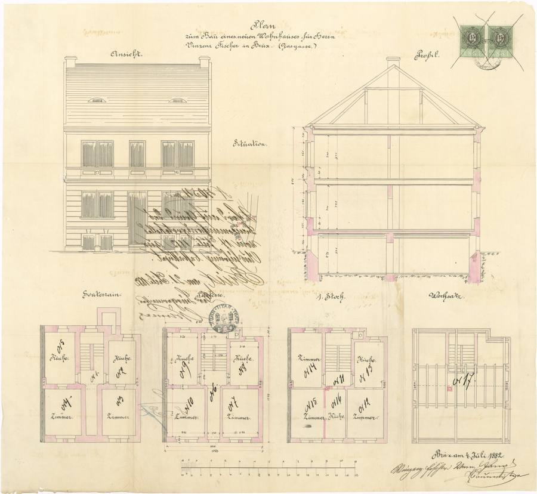
plán / výkres
SHA-256 6726f46a2649…

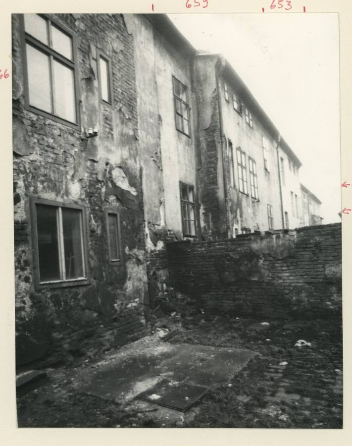
fotografie
SHA-256 7180bc4d75a7…

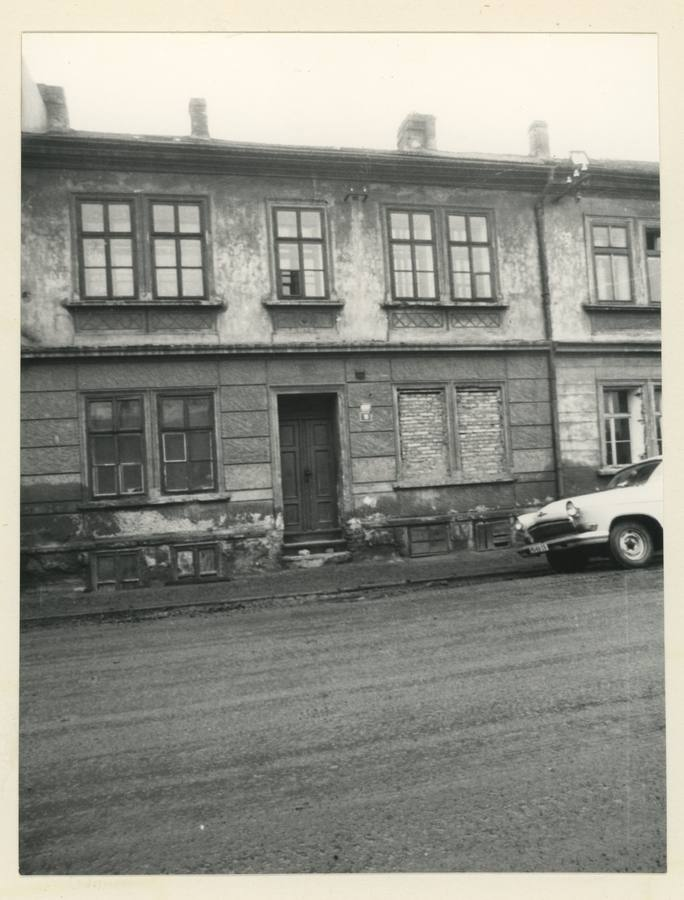
fotografie
SHA-256 2ff231935c0b…

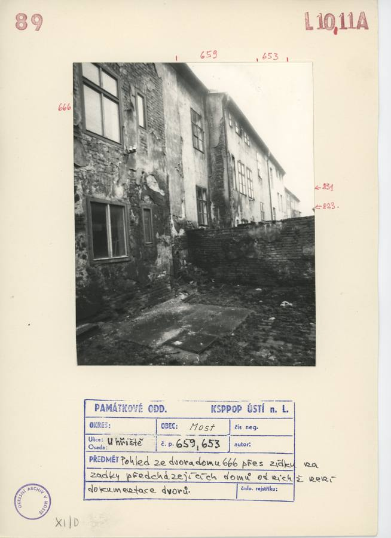
archivní karta
SHA-256 bbe4a0ddb8b5…

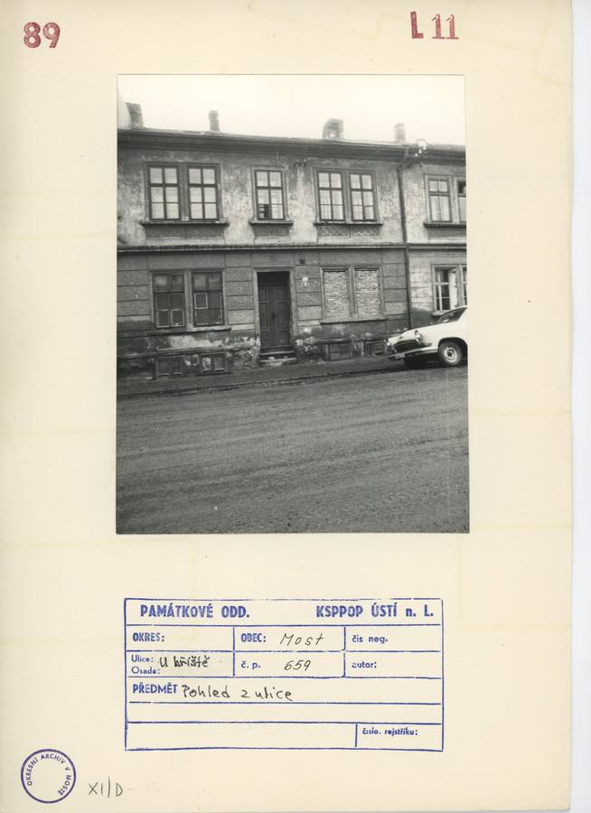
archivní karta
SHA-256 86dda2047e88…

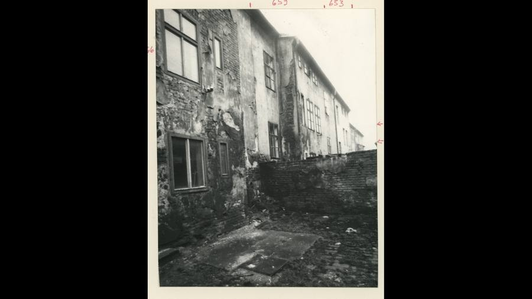
kopie bez tagu (1920 × 1080)
SHA-256 3727282b7a97…

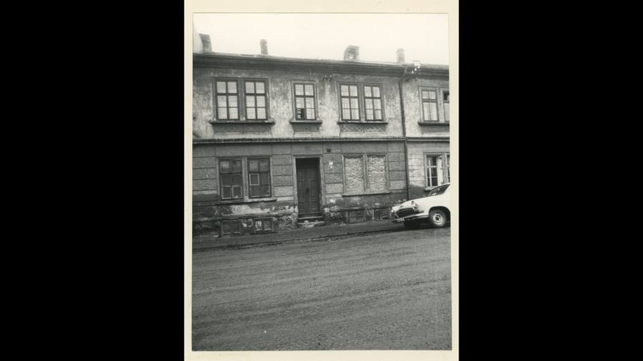
kopie bez tagu (1920 × 1080)
SHA-256 eaefc4e408fc…

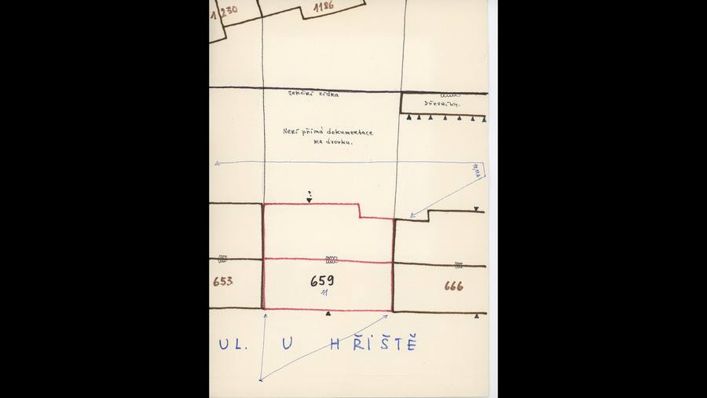
kopie bez tagu (1920 × 1080)
SHA-256 b74645f685e6…
Geometrie
| Revize geometrie | r3 |
|---|---|
| Úsek ulice | S2 · severozápadní strana VSV ramene |
| Poloha | GIS budova 1124, popisek 659, ulice U hřiště (1938 Seligerova) |
| Šířka průčelí | 10,35 m |
| Výška okapu | 8,55 m (odhad) |
| Podlaží | 2 |
| Střecha podle pramenů | sedlová střecha s hřebenem podél ulice, vzepětí asi 4,2 m (plán 1882); vikýřové okénko z pohledu 1882 na fotografii 60.–70. let není, proto není modelováno |
| Otvory / vikýře v modelu | 10 / 0 |
| Polygonů | 224 |
Kontrolní pohledy

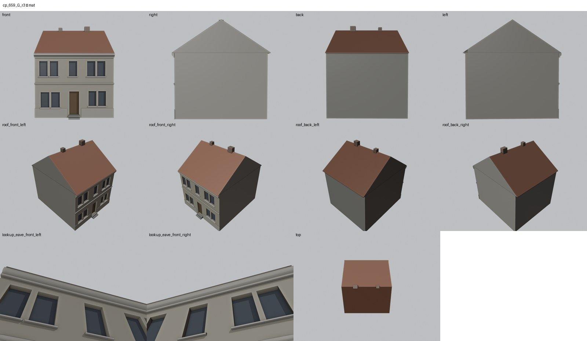

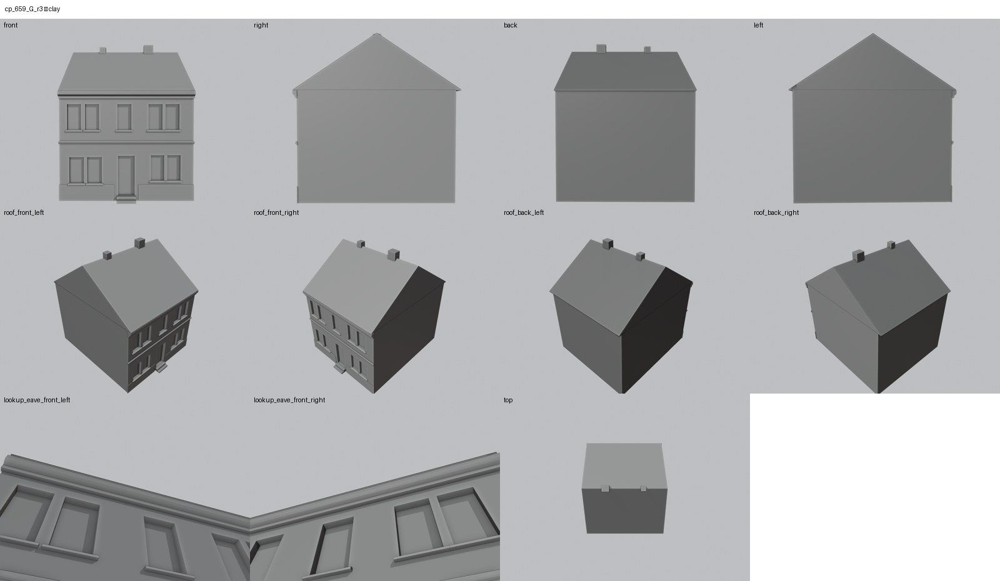

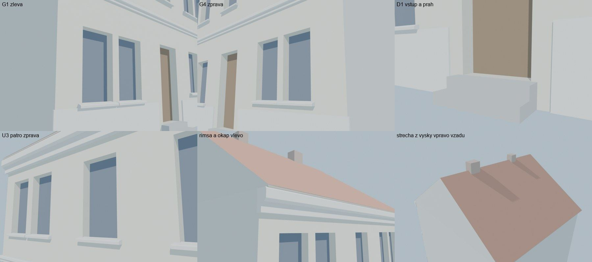
Kontrola modelu
| Brána geometrie (automaticky) | v pořádku |
|---|---|
| Uzavřené podkroví (GLB) | v pořádku: zásahy paprsků 0, nekryté zdivo 0,00 m², střecha nad prázdnem 0,00 m² |
| UV mapování | v pořádku: 0 zkolabovaných ploch z 224 |
| Síť | v pořádku |
| Počty otvorů proti pramenu | souhlasí |
| Vizuální kontrola | prošla (Claude (Opus 5.5), 2026-10-25) |
| Kontrola střechy | prošla |
- hlavní průčelí: = Ansicht 1882 (souhlasí)
Textury
zatím bez textur
Až Codex dodá texturovaný model, objeví se v prohlížeči nahoře volba Textury (Codex).
Hypotézy
Vše níže je model_hypothesis, provisional, locked: false.
- zazděná okna G3 a G4 jsou modelována jako otvory, zazdívka patří do textury
- polohy komínů jsou z fotografie, výšky jsou odhad
- sklepní okénka patří do textury
- šířka je přední hrana GIS 10,35 m (plán 10,00–10,23 m)
Technický zápis hypotéz v plánu modelu (revize r3, bez diakritiky)
- zazdena okna G3/G4 modelovana jako otvory (zazdivka = textura)
- polohy komínu z fotografie, vysky odhad
- sklepni okenka = textura
- sirka = predni hrana GIS 10,35 m (plan 10,00-10,23)
Historie revizí modelu
- r1 25.10.2026: prvni stavba - otvory z rektifikovane fotografie KSPPOP, vysky a strecha z planu 1882
- r2 25.10.2026: front_width = predni hrana GIS 10,35 m (r1 10,62 = vcetne sikmeho zadniho rohu -> brana mesh FAIL bowtie), osy prepocteny x 0,975
- r3 25.10.2026: stejny plan; builder trianguluje konkavni ctyruhelniky po booleanu (r2: brana mesh FAIL - 1 bowtie vlevo od U1/G1)
Soubory
- Geometrie čp. 659, GLB (revize r3)
- Pracovní model: F:\MOST\output\u_hriste_street_claude_2026-10-25\houses\cp659\r3\cp_659_G_r3.blend
- Plán modelu: F:\MOST\output\u_hriste_street_claude_2026-10-25\houses\cp659\geometry_plan.json